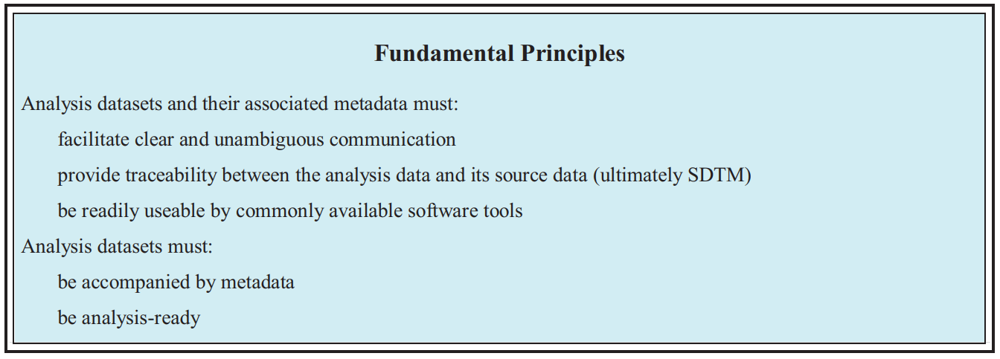
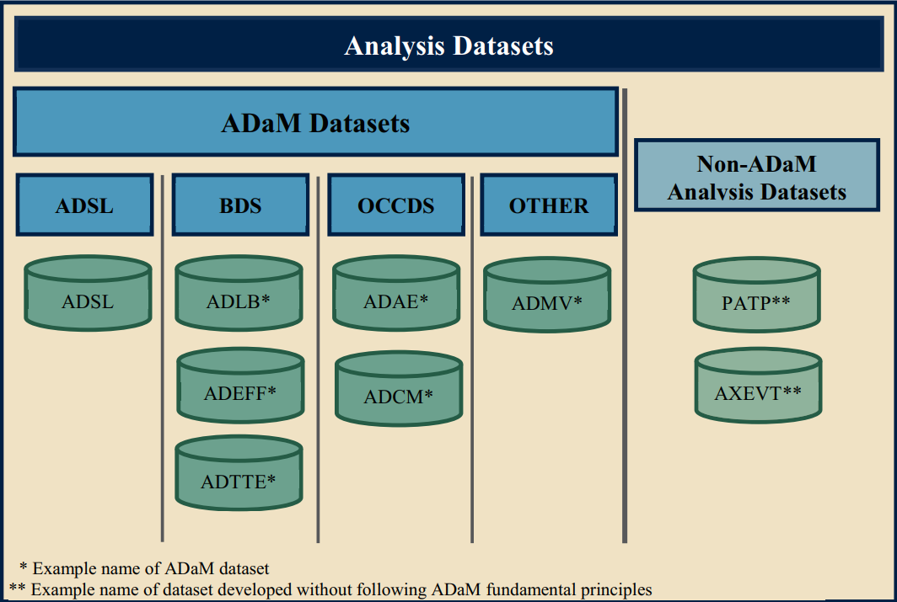
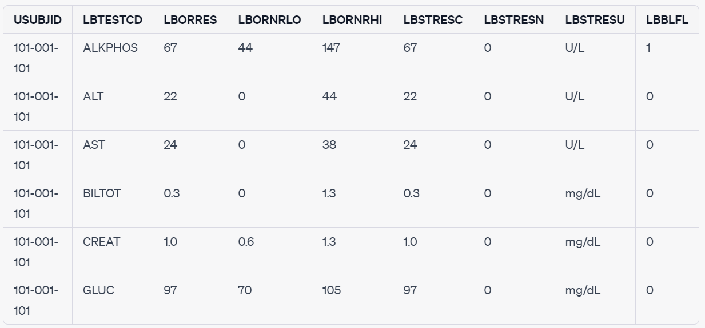
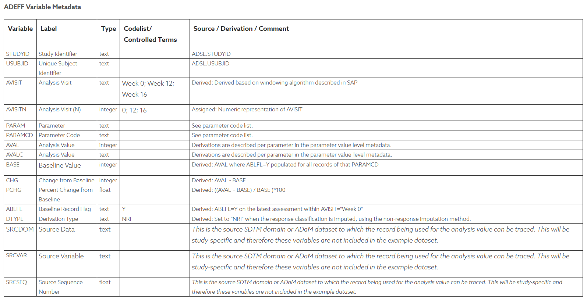
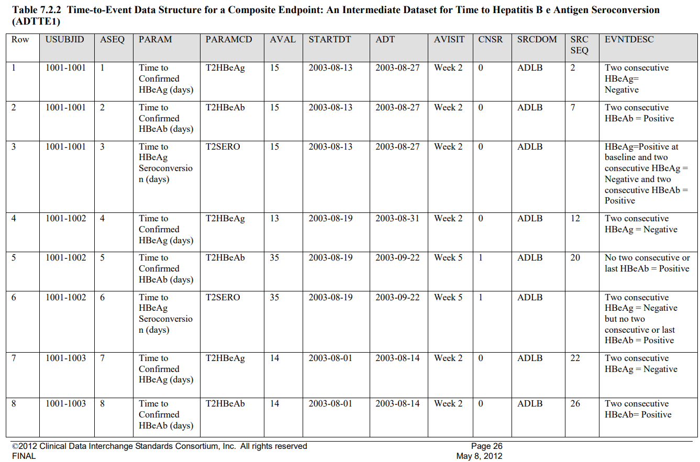
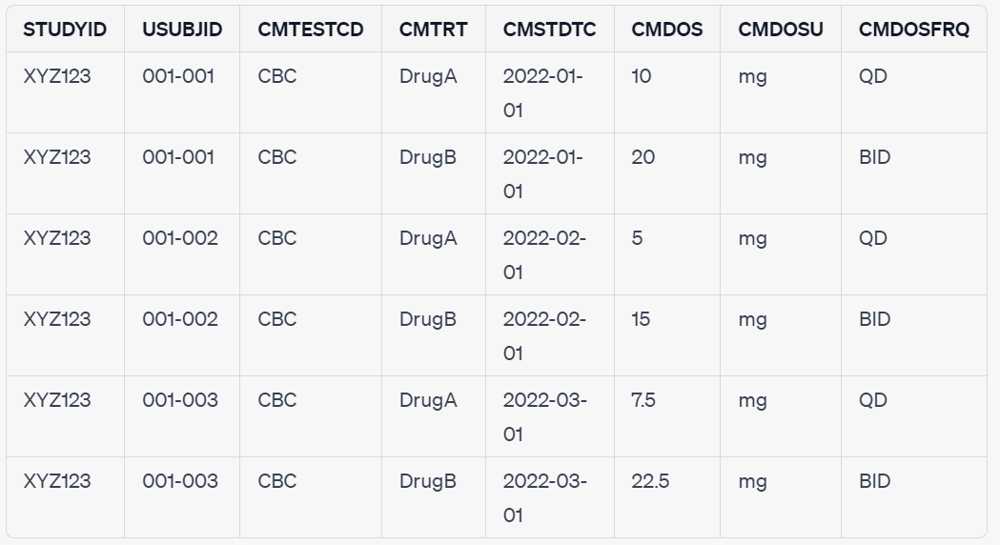
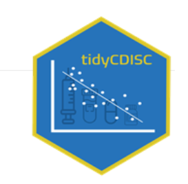
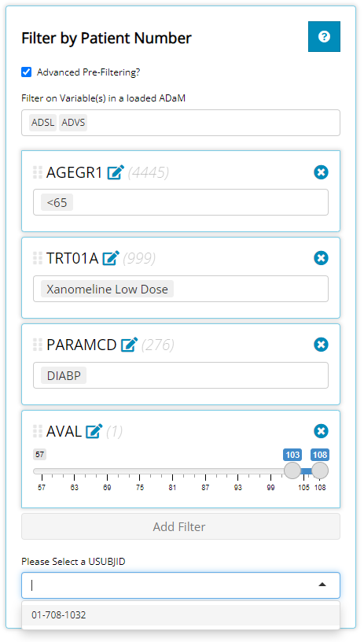

ADaM in CDISC
Analysis Data Model in CDISC
What is CDISC?
The Clinical Data Interchange Standards Consortium (CDISC, 국제임상데이터 표준컨소시엄) was formed in 1997 to develop global standards for clinical research.
Clinical trial data is very crucial as it helps doctors and scientists make decisions about how to treat diseases and improve healthcare. However before CDISC, clinical trial data was collected in many different ways by different organization, making it extremely difficult to compare and combine the data from different trials. This meant that important medical discoveries could be delayed or missed, and patients were hindered from getting the best possible treatments.
CDISC standards are recognized and recommended by the U.S. Food and Drug Administration (FDA).
임상시험에서 수많은 종류의 데이터들이 수집된다. 임상시험 데이터는 의약품의 안전성과 유효성을 증명하며, 임상효과를 확인하고 이상반응을 조사하는데 사용될될 수 있어 매우 중요하다.
그러나 문제는 각 기관마다 통일된 규정이 없어서 데이터들의 변수 이름도 제각각이고, 데이터의 구조와 정의가 달랐다. ▶️ 데이터를 정리하고 분석하는지에 대한 국제적인 표준이 없다면, 데이터를 해석하고 설명하는데만 상당한 시간과 노력이 필요하여 비효율적이다.
이런 비효율성을 없애고자 CDISC라는 비영리 단체가 1997년에 설립되어 규제기관, 제약회사, 임상연구 조직 등을 규합해서 임상시험 데이터의 표준을 정의하였다.
이제 미국 FDA나 일본의 PMDA와 같은 규제기관들도 신약개발 및 임상시험에서 데이터를 CDISC 표준으로 제출하기를 요구하게 되는 만큼 CDISC 표준은 널리 사용되고 있다.
CDISC에는 데이터와 관련된 SDTM (Study Data Tabulation Model) 과 ADaM (Analysis Data Model)이 있다.
SDTM은 임상시험의 데이터를 제출하기 위해 정의한 표준으로, raw 데이터를 정해진 형식으로 정리/정의하여 FDA 등의 규제기관에 제출하는데 사용된다.
SDTM을 이용하여 데이터분석이 가능하도록 변환한 형태로 변환하는게 ADaM이다.
How we build ADaM from SDTM
즉, ADaM은 데이터의 도출과 분석, SDTM은 데이터를 arrange in table 하는 것!
우리는 여기서 CDISC ADaM 특화 서비스 개발을 목표로 한다.
ADaM
ADaM의 data structures에 대해서 배우기 전에, CDISC에서 정의한 ADaM의 Fundamental Principles에 대해 살펴보자 (중요한건 아니니 그냥 skim만 해도 괜찮다!) 
ADaM에서 정의된 Data Structure는 4개가 있다: 1. ADSL (subject-level analysis dataset) 2. BDS (basic data structure) 3. OCCDS (occurence data structure) 4. OTHER

이런 Data Structure가 왜 필요할까?
- Analysis를 위한 structure가 필요하기 때문이다!
분석 목적에 따라 맞는 data structure를 사용하면 된다.
각 data structure가 무엇이고 예시 데이터셋들을 살펴보자.
1. ADSL (Subject-Level Analysis Dataset)
개별 연구대상자, contains one record per subject
한 행에 대상자의 정보, 임상시험의 정보 등 SDTM의 한 대상자의 모든 자료가 들어가고, 다른 ADaM datasets의 분석에 필요한 data가 있으면 된다
즉, study level을 분석하는데 사용된다
주요 변수는 ID (USUBJID), 약물그룹(TRT01P), 시작일(RFSTDTC), 종료일 (RFENDTC) 등이 있다.
ADSL example in tidyCDISC
다른 변수들의 의미가 궁금하시다면 여기를 확인해라.
2. BDS (Basic Data Structure)
한 대상자에 대한 반복적인 혹은 여러번의 결과가 나타나는 데이터이다.
- 대상자, 분석 변수, 분석 시점별로 하나 이상의 데이터가 존재할 수 있다. 하나 이상의 레코드가 존재합니다.
- ADaM BDS의 주요 목적 중 하나는 바로 분석이 가능한 것이다.
- Analysis timepoint is conditionally required, depending on the analysis.
- In situations where there is no analysis timepoint, the structure can be one or more records per subject per analysis parameter. [CDISC 관련 가이드라인 모음집]
ADSL 및 OCCDS와 같은 다른 데이터 구조의 기초 또는 시작점이기 때문에 “Basic”라고 한다.
기본 데이터 집합(예: 치료, 인구학 및 안전성 데이터)을 처리하는 데 사용되는 데이터 구조이다. 각 변수에 대해 하나 이상의 레코드가 있을 수 있다.
반복측정이 계획되어 있거나, 이미 반복적으로 측정한 값이다
Does not support all types of statistical analyses (such as simultaneous analysis of multiple dependent variables)
BDS는 부작용이나 기타 발생 데이터(other occurrence data)의 발생률 분석을 지원하지 않는다.
BDS의 종류를 알아보자
ADLB (Laboratory Data Analysis Dataset):
검사 데이터, laboratory test results data.
주요 변수는 ID (USUBJID), 검사항목 (LBTESTCD, LBTEST), 결과값 (LBORRES)이 있다.
 CDISC. (2011). Analysis Data Model Implementation Guide: ADaM Version 1.1.
ADEFF (Analysis Dataset Definition):
메타데이터 (다른 데이터를 설명해 주는 데이터) 테이블이다.
분석하려는 data set의 내용 및 구조를 설명한다.
ADaM dataset를 만드는데 ADEFF table이 사용된다.
The ADEFF table should be completed before creating the analysis datasets to ensure consistency in variable definitions and to allow traceability of the analysis datasets back to their source data.
 table from CDISC.org
ADTTE (Analysis Data Time-to-Event):
timing of events in a clinical trial
more detailed information about ADTTE could be found here 
[PARAMCD:Parameter Code, STARTDT: Time to event origin date for subject, ADT: Analysis date, SRCDOM: Source Data]
3. OCCDS (Occurence Data Structure)
ADaM Dataset structure 중 세번째 OCCDS는 한 대상자에 대한 반복적인 결과가 나타난다는 점에서 BDS와 비슷하다.
하지만, OCCDS는 BDS처럼 반복적으로 측정되지 않으며, 한 대상자에 대한 결과가 한건도 발생하지 않거나, 이와 반대로 무수히 많이 발생할 수도 있다.
OCCDS 는 부작용과 같은 discrete event를 분석하는데 사용된다.
CDISC ADaM structure for OCCDS v1.0
OCCDS의 종류를 알아보자!
ADAE (Adverse Events Analysis Datset):
- 부작용 정보에 대한 dataset
- 주요 변수는 임상시험 과정: ID (USUBJID), 부작용종류 (AETERM), 발생일 (AESTDTC), 해결일 (AEENDTC), 중증도(AESER)
ADAE example in tidyCDISC
ADCM (Concomitant Medications Analysis Datase)
복용 약물정보
주요 변수는 ID (USUBJID), 약물명 (CMTRT), 시작일 (CMSTDTC), 종료일 (CMENDTC), 용량 (CMDOSFRQ)
One record or multiple records per subject per recorded medication occurrence or constantdosing interval
example ADCM dataset: 
OTHER
By definition, this class has no standard structure!
OTHER의 dataset은:
- ADaM의 Fundamental Principles과 naming conventions를 따른다.
- Datasets are not in one of the defined standard ADaM structures
details on other
tidyCDISC R 패키지

R에서 사용되는 tidyCDISC의 데모를 같이 실행해보자 ▶️ https://rinpharma.shinyapps.io/tidyCDISC/
Three major features: - Drag-and-Drop Table Generator - Population Explorer (Graph Generator) - Individual Explorer/ Patient Profile Viewer
The tidycdisc uses three R packages for each of these features: - Table Generator ▶️ GT - Population Explorer ▶️ plotly - Patient Profiles ▶️ timevis
The tidycdisc was built to be modularized.
Data Upload
Data upload 
- The demo has CDISCPILOT01 d-예시 데이터
Table Generator
The Table Generator tab is divided in two
filtering module for each column.
the ADSL & ADAE bins include the names of all their variables, while any BDS data sets, like the ADVS & ADLBC bins include a list of all the PARAMCD values
오른쪽에는 “Stats”에서 원하는 통계 분석을 실행할 수 있다.
can also group our data

- standards are well defined and these tables are so common for regulatory submissions, the tidyCDISC app has built-in support for constructing standard analysis tables.
- 시스템 기관 등급별 부작용 및 감소 빈도에 따라 정렬된 선호 용어
More information about Table Generator found here
Population Explorer

- visual insights on patient populations via a diverse mix of chart types
Individual Explorer

자료들 정리
- https://www.youtube.com/watch?v=EFGkHrV0WbY
- https://www.cdisc.org/standards/foundational/sdtmig/sdtmig-v3-3/html#Representing+Relationships+and+Data
- https://cran.r-project.org/web/packages/tidyCDISC/vignettes/getting_started.html
- https://www.cdisc.org/system/files/members/standard/foundational/adam/ADaM_OCCDS_v1.0.pdf
- https://www.lexjansen.com/pharmasug/2014/DS/PharmaSUG-2014-DS09.pdf
- https://www.pinnacle21.com/sites/default/files/2017-01/adam_tte_final_v1.pdf
- https://www.pharmasug.org/proceedings/2015/DS/PharmaSUG-2015-DS16.pdf
- https://tcpharm.org/pdf/10.12793/jkscpt.2007.15.1.20
- https://www.lexjansen.com/pharmasug/2022/AD/PharmaSUG-2022-AD-001.pdf
- https://phmpt.org/wp-content/uploads/2022/03/125742_S1_M5_c4591001-A-adrg.pdf
- CDISC (Clinical Data Interchange Standards Consrotium)관련 가이드라인 모음집
- https://cran.r-project.org/web/packages/tidyCDISC/vignettes/getting_started.html